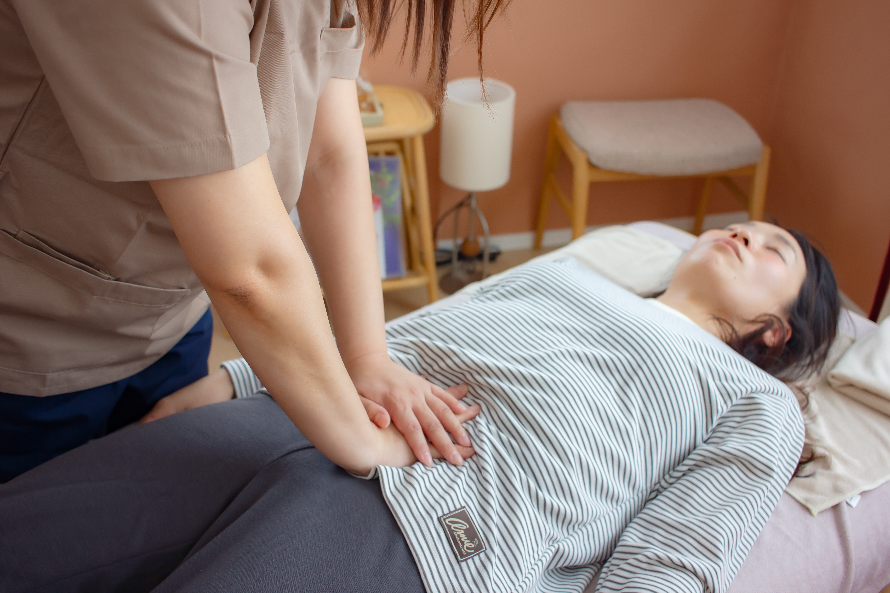
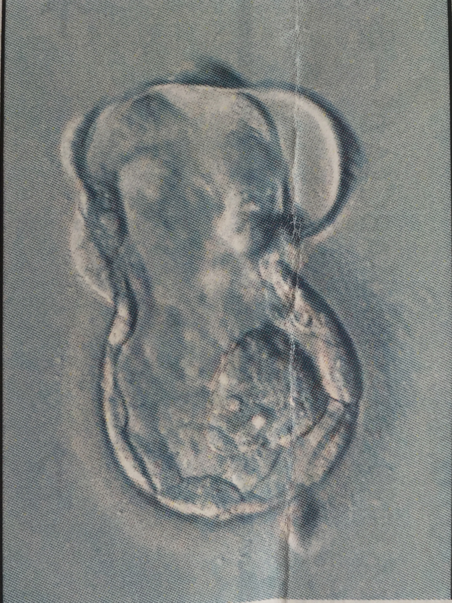
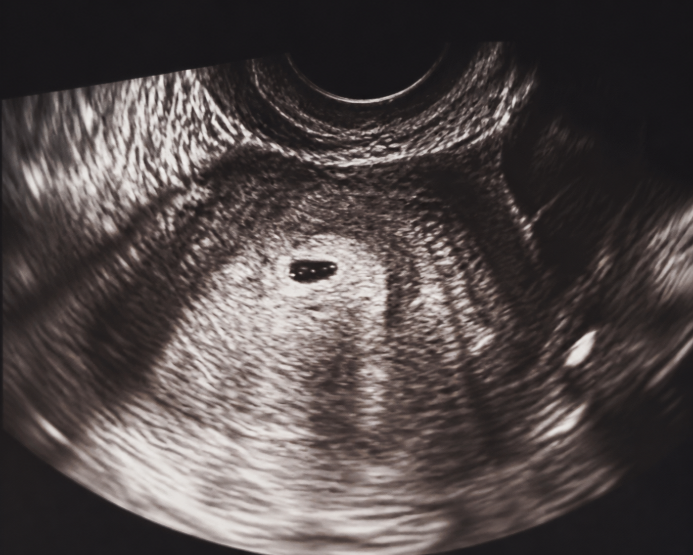
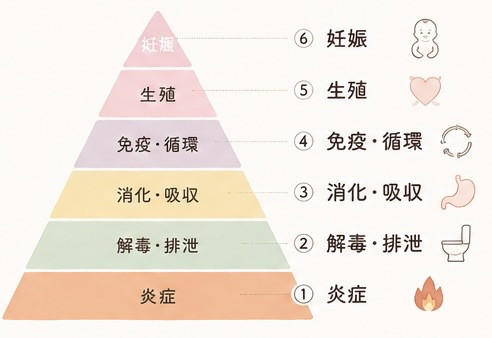

ぽかぽか子宝整体
お腹・骨盤・内臓まわりのバランスを整え、
冷えや巡りに目を向けながら身体づくりを支えます
- 初回
- 8,800円
- 2回目以降
- 12,000円
- 時間
- 初回90〜120分／2回目以降60分
 salon bebe女性と赤ちゃんのための保健室
salon bebe女性と赤ちゃんのための保健室FERTILITY SUPPORT
妊娠への一歩は、自分の身体を知ることから

FOR YOUR JOURNEY
そんな思いを、ひとりで抱えていませんか。
身体はすぐに変わるものではないからこそ、3〜6か月ほどの時間をかけ、
食事・睡眠・冷え・巡りなど日々の土台から見つめます。
bebeのサポートは医療行為ではなく、妊娠を保証するものではありません。
不妊治療中の方にも、治療方針を尊重しながら日常生活の面から伴走します。


DOES THIS SOUND LIKE YOU?
MENU
BEBE'S APPROACH
bebeでは、日本妊活協会で学んだ考え方と分子栄養学を参考に、身体の状態を6つの視点で捉えます。これは医学的に確立された妊娠の順序ではなく、日々の生活と身体を整理するためのbebe独自のサポート指針です。
